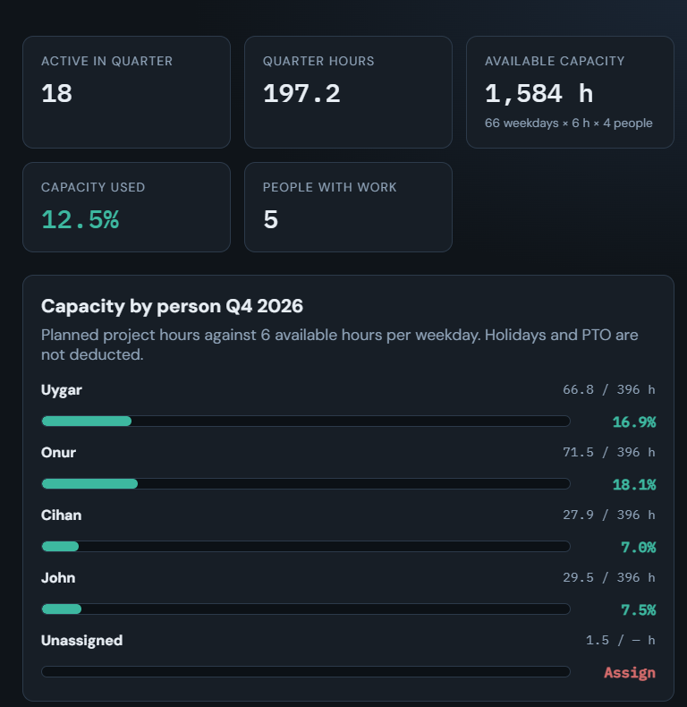
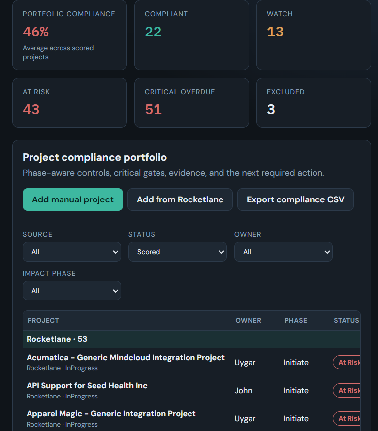
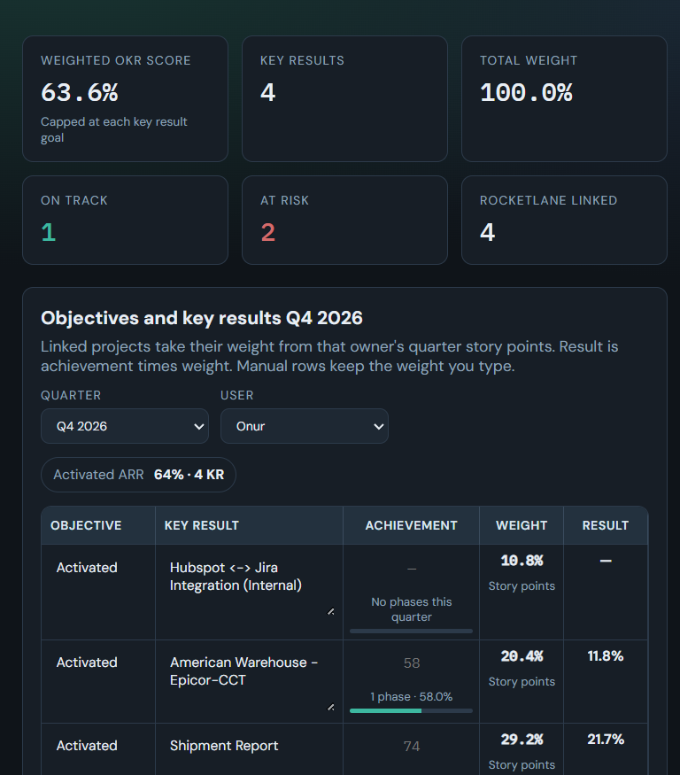

Estimator
Can we staff the work?
Hours and story points by person, placed in the quarter where the work happens.
Rocketlane holds the projects. The Integration Delivery Tracker turns that portfolio into the three questions we answer before we commit the quarter.
Estimator
Hours and story points by person, placed in the quarter where the work happens.
Compliance
The controls due at this phase, the evidence, and the next action on each project.
OKRs
Each person’s plan becomes their weight. Progress is scored only for this quarter.

Every in-scope project carries the same controls, from the plan through closure. The score uses only what is due for the phase the project is in.

A linked project’s weight is its allocated quarter hours divided by one person’s quarter capacity. That total does not have to be 100%. Progress counts only the phases that belong in this quarter.
